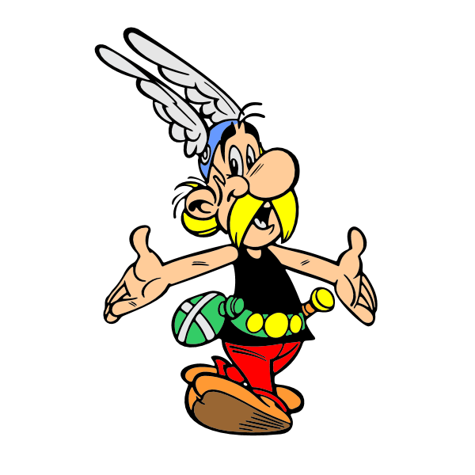
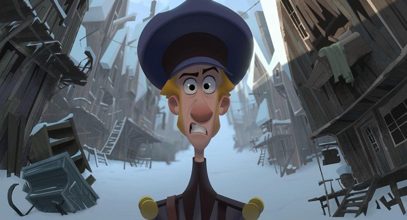
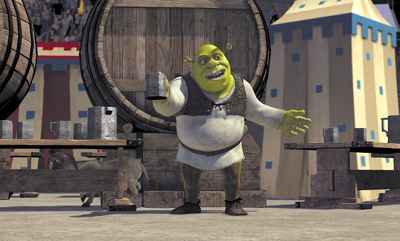
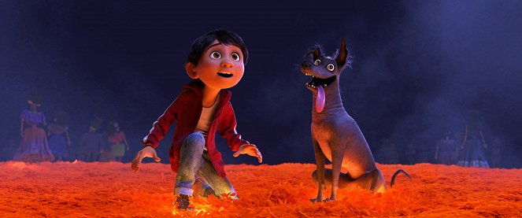
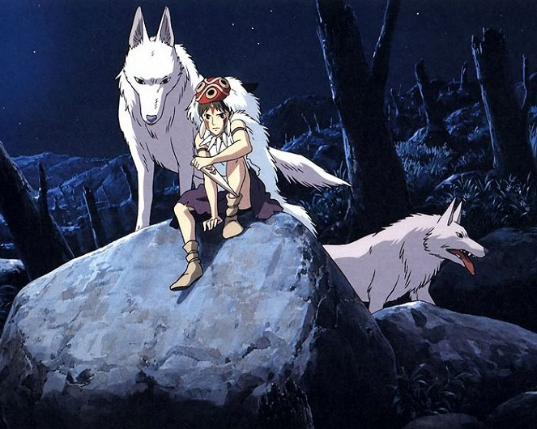

| poradie | názov filmu | rok vydania | hodnotenie v percentách |
|---|---|---|---|
| 1. | 12 úkolů pro Asterixe Asterix  | 1976 | 93,8% |
| 2. | klaus klaus  | 2019 | 92,6% |
| 3. | shrek shrek  | 2001 | 92,4% |
| 4. | coco coco  | 2017 | 87,3% |
| 5. | princezna monrooke monrooke  | 1997 | 86,9% |
| 6. | Sněhurka a sedm trpaslíků | 1937 | 86,6% |
| 7. | Cesta do fantazie | 2001 | 86,6% |
| 8. | Čarodějův učeň | 1977 | 86,5% |
| 9. | Lví král | 1994 | 86,4% |
| 10. | Jak vycvičit draka | 2010 | 86,1% |
| 11. | Pink Floyd: The Wall | 1982 | 86,0% |
| 12. | Hledá se Nemo | 2003 | 85,9% |
| 13. | Ratatouille | 2007 | 85,5% |
| 14. | Toy Story: Příběh hraček | 1995 | 85,5% |
| 15. | Stvoření světa | 1957 | 85,5% |
| 16. | Zámek v oblacích | 2004 | 85,3% |
| 17. | Kimi no na wa. | 2016 | 85,5% |
| 18. | Vlkochodci | 2020 | 85,6% |
| 19. | Spider-Man: Paralelní světy | 2018 | 85,2% |
| 20. | Příšerky s.r.o. | 2001 | 85,0% |
top film : 12 úkolů pro Asterixe

Dlhé roky sa Cézarove vojská snažia dobyť galskú dedinu, ale márne. Cézarovi vojaci sa už obávajú, že bojujú s bohmi. Aby Cézar dokázal svoju moc, rozhodne sa s Gálmi uzavrieť dohodu. Ak zvládnu vykonať dvanásť úloh, ktoré im prikáže splniť, stanú sa zvrchovanými vládcami. Ale ak jednu úlohu nezvládnu, podrobí sa celá dedina Cézarovi. Asterix a Obelix musia rozhodnúť o osude svojich priateľov..